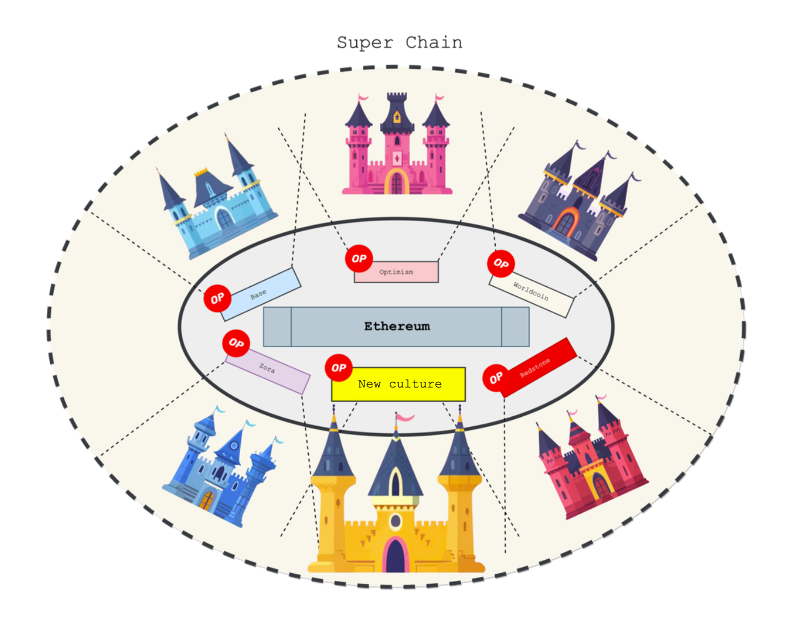

Harena seeks to reshape blockchain gaming by advancing the Play-to-Glory (P2G) model. Whereas most blockchain games prioritize monetary rewards under Play-to-Earn (P2E), P2G emphasizes intrinsic enjoyment and immersive gameplay by reinstating meaningful risk within the Magic Circle. Layer 2 is employed as enabling infrastructure to make outcomes durable and public on-chain and to support sustainable, community-governed growth.
The concept of the Magic Circle, first articulated by Johan Huizinga in Homo Ludens and later expanded by scholars such as Eric Zimmerman and Frank Lantz, describes the boundary between reality and play. Within this space, the ordinary rules of the real world are suspended, and the unique rules of the game exclusively govern player behavior and meaning-making.

The Magic Circle generates distinct social and psychological value. As players internalize a game’s rules, they develop skills, experience achievement, and cultivate self-respect. Within this protected space, cooperation and competition foster camaraderie, belonging, and shared purpose.
Although the Magic Circle suspends the rules of ordinary reality, the meanings it produces often extend beyond the game itself. Experiences within play—such as confronting prejudice through the role of an alien race in a role-playing game, or navigating deception and trust in a strategy board game—can shape real-world perspectives, relationships, and identities.
In the medieval era, reality and fantasy were deeply intertwined. Theology, chivalry, and folklore imbued everyday objects and events with symbolic meaning—lilies embodied purity, while mirages were interpreted as witchcraft. Rituals and forms of play emerged naturally from these shared cultural imaginations.
With the advent of modernity, rationalization and scientific progress eroded these mythic frameworks. Work and play became sharply separated, and adult play diminished, reduced largely to entertainment or leisure activities for children.
In the contemporary era, however, play has re-emerged as a central cultural force. Consumers increasingly seek experiences that transcend mere functionality. This shift is reflected in what scholars describe as symbolic, aesthetic, and playful forms of capitalism. Products and services are no longer designed only for user experience (UX), but also for play experience (PX). In this sense, the medieval Magic Circle of fantasy has been revived as a modern Magic Circle of symbolic meaning, aesthetic immersion, and playful engagement.
Blockchain games combine gaming with blockchain technology. Games inherently aim for fun, while blockchain enables monetization. This convergence has produced two distinct models:
To date, most blockchain titles have remained within the P2E paradigm. The rise of Axie Infinity demonstrated the short-term viability of P2E, and many successors replicated its incentive-driven framework. By contrast, P2G seeks to restore play as an intrinsic value, using blockchain to protect and strengthen the Magic Circle rather than to commodify it.
Financialization in blockchain games arises for two primary reasons. First, unlike traditional games—where developers and server operators maintain full control over economic activity—blockchain games operate without centralized regulators, allowing markets to evolve in a decentralized and autonomous manner. Second, blockchain significantly reduces transaction costs. Smart contracts enable trustless and transparent exchanges, where interactions require only minimal network fees, thereby encouraging frequent and large-scale economic activity.
To date, most blockchain games have relied on tokenomics-driven models. Investors approach them by calculating return on investment, and in some cases players are even hired as paid labor. Because blockchain makes game logic and state fully transparent, it also enables the development of automated bots. As a result, P2E gameplay often collapses into repetitive, mechanized tasks where genuine competition and strategy lose significance, and human creativity is eclipsed by algorithmic efficiency.
By contrast, P2G games deliberately minimize token-centric mechanics and instead emphasize play as an irreducible human activity. Their design foregrounds elements that resist automation—unpredictable choices, emergent strategies, and creative expression. Most often realized as player-versus-player (PvP) formats, P2G games prioritize complexity and skill, ensuring that meaningful outcomes depend on human ingenuity rather than computational power.
In P2E games, play itself is reduced to a form of labor, oriented toward monetary gain. Economic incentives dominate design, diminishing intrinsic enjoyment and immersion. Players are drawn into repetitive tasks that sacrifice creativity and diversity, while incentive structures often distort interactions—producing inflation, imbalance, or extractive economies.
P2G games, by contrast, frame play as the pursuit of glory. Here, blockchain functions not only as an economic layer but also as a medium of recognition, preserving achievements and legitimizing community respect. Success is measured through creativity, strategy, and fair competition, with rewards extending beyond currency to include reputation and belonging. By privileging enjoyment and achievement over mere financial gain, P2G fosters healthier communities and more sustainable growth.
In Play-to-Glory (P2G) games, play itself constitutes a meaningful practice. Beyond entertainment, it offers players opportunities to discover self-worth, identity, and belonging. For such meaning to emerge, the Magic Circle must not only be preserved but actively reinforced. Yet, the commercial history of gaming has frequently encroached upon this circle, compromising the purity of play.
Both games and sports establish a Magic Circle that suspends ordinary reality and offers pure enjoyment. Yet, while the modern gaming industry has often encroached upon this circle—diluting play with intrusive monetization—the sports industry has evolved by protecting the integrity of play while generating sustainable revenue.
In sports, revenue is not extracted from the core game itself but from the meta-games that surround it. The core remains skill-based and inviolable, while meta-games emerge around it—broadcasting, tournaments, betting, sponsorships, and merchandise. Soccer, for instance, is played according to fixed rules on the field, but its cultural popularity sustains vast industries beyond the game. These meta-games expand proportionally as interest in the core game grows, without compromising the fairness or meaning of the game itself.
Like sports, the gaming industry can separate the core game from its surrounding markets. The core game remains skill-based and protected within the Magic Circle, while meta-games emerge around it, structured primarily through capital. Blockchain offers the ideal infrastructure for these meta-games by enabling efficient, transparent, and decentralized capital flows.
Through smart contracts, blockchain removes intermediaries, reduces transaction costs, and guarantees security and reliability. This makes it possible to build meta-games around the core—much like the revenue ecosystems of traditional sports. Yet, because games are inherently more malleable than sports, blockchain opens the door to even broader experimentation: prediction markets, fan-driven membership tokens, guild economies, and other forms of capital-based play that can scale rapidly.
Crucially, these meta-games must remain complementary to the core. The intrinsic enjoyment of the core game drives interest in meta-games, while the expansion of meta-games, in turn, reinforces engagement with the core. This positive feedback loop enables both layers to co-evolve, generating sustainable growth across the gaming ecosystem.
The history of gaming began with the arcade era. These games were easy to learn yet difficult to master, built on simple rules and intuitive controls that made them broadly accessible. Achieving a high score, however, demanded sustained practice and skill. A defining feature of this era was the presence of risk: players entered with only a limited number of lives, and survival depended entirely on ability. Those who excelled could extend their playtime and see their names immortalized on leaderboards, earning recognition for their achievements.
As technology advanced, home consoles transformed the medium. Games could now be enjoyed in the comfort of one’s home, eliminating the need to insert coins and, with it, the constant risk of game over. This shift diminished the meaning of defeat and the significance of victory. In response, designers began to emphasize storylines, graphics, and sound, gradually recasting games as audiovisual experiences that competed less with sports and more with movies and television.
To strengthen the Magic Circle is to preserve a space where actions matter under rules distinct from ordinary life. Immersion, collaboration, and competition help, but without consequence, immersion is shallow. In contemporary design, consequence emerges when outcomes persist and shape future experiences.
Blockchain enables this persistence by making player outcomes—victories, defeats, contributions—permanently and transparently recorded on-chain. These durable records can then support a variety of incentive structures: recognition within the community, distribution of rewards, or qualification for tournaments and events. Because such records are public and composable, they can also feed into surrounding meta-games—prediction markets, fan memberships, or guild economies—ensuring that each match resonates beyond itself.
In this way, Play to Glory (P2G) does not aim to maximize economic return but to restore the stakes that make play meaningful. Blockchain allows designers to heighten the value of each game session by coupling its outcome with durable records and future implications. Defeat regains consequence, victory regains significance, and the Magic Circle is not only protected but reinforced through the reintroduction of risk.
Ethereum’s rollup-centric roadmap allows Layer 2 protocols to sustain themselves through transaction fees, preserving the neutrality of Ethereum’s base layer while enabling diverse projects to operate autonomously. In this structure, researchers and developers can pursue independent agendas, while still benefiting from Ethereum’s shared security and network effects.
As semi-autonomous ecosystems, Layer 2 solutions provide fertile ground for the emergence of distinct subcultures. Each rollup combines Ethereum’s cultural foundations with its own governance models, incentive structures, and community norms, gradually shaping a unique identity.
Optimism’s vision of the Superchain exemplifies this dynamic: by linking the OP Mainnet with other chains into a unified network, it delivers scalability and decentralization simultaneously. Such interoperability, coupled with atomic cross-messaging and composability, demonstrates how Layer 2 can host vibrant subcultures while remaining anchored to the broader Ethereum ecosystem.
In the context of gaming, this flexibility positions Layer 2 as an ideal environment for game-centered subcultures to emerge. Just as sports have historically cultivated unique fan bases, rituals, and meta-games around a shared core, blockchain-enabled games on Layer 2 can generate self-sustaining communities that treat play not only as entertainment but as a cultural practice.
In childhood, the simplest resources—a ball, a goalpost, an open space—were sufficient to sustain rich play. These public goods nurtured cooperation, creativity, and social growth.
In the digital era, however, the economics of game development have complicated this dynamic. Building modern games is resource-intensive, and commercial pressures often overshadow their cultural and social value. As a result, games have struggled to maintain their role as shared public goods, increasingly shaped by business interests rather than communal meaning.
Layer 2 ecosystems offer a pathway to restore this balance. Through mechanisms of public funding, transaction fees can be reinvested into the creation of games as public goods. Community-driven governance can allocate these resources transparently, enabling innovative and experimental projects that might not survive under purely commercial logics.
By treating games as public goods, Layer 2 protocols can onboard diverse titles, sustain creative risk-taking, and broaden access to meaningful play. In this framing, the value of games is not limited to entertainment or profit but extends to their capacity to generate culture, foster identity, and strengthen communities.
Game development demands substantial investment. Within Layer 2 ecosystems, this need can be met through mechanisms of public funding, where community-governed treasuries distribute resources to promising projects. Proposals are evaluated against collectively defined criteria, and funding decisions are determined through transparent voting. This process ensures not only accountability but also active community participation in shaping the ecosystem.
Within this model, impact becomes the measure of profit. Core game contributors—elite players whose skill inspires others, much like Cristiano Ronaldo or Lionel Messi in soccer—earn both recognition and significant rewards. Their performance and visibility drive engagement across the ecosystem, creating aspirational pathways for others to follow.
At the same time, meta-game contributors—developers, community managers, artists, and organizers—enrich the broader cultural and economic environment of play. Their work sustains diversity, nurtures creativity, and strengthens community ties. Fair compensation for these roles reinforces the health and longevity of the entire system.
By distributing rewards proportionally to impact, the Play-to-Glory model aligns sustainability with fairness. Economic incentives no longer overshadow the value of play but instead amplify it, ensuring that both core excellence and supportive contributions are recognized and rewarded.
In recent years, the center of trust has shifted. People increasingly place confidence not in elites or large corporations but in close networks and peer communities. Technology has accelerated this shift by enabling new forms of trust between strangers—platforms like Airbnb and Uber have transformed entire industries by institutionalizing peer-to-peer reliability.
The gaming industry, by contrast, has often struggled with trust. Companies prioritize short-term profits, foster exploitative spending, and create unfair environments, eroding confidence among players. This dynamic undermines not only community well-being but also the long-term sustainability of gaming ecosystems.
Blockchain-based governance reconfigures this trust. Instead of being concentrated in corporations, trust is embedded in protocols and smart contracts. Rules are transparent, rewards are distributed proportionally to contribution, and accountability is built into the system itself.
For blockchain games, this shift aligns incentives with community health. By rewarding players, developers, and organizers in proportion to their impact, the Play-to-Glory model fosters shared growth and durable trust. The result is not merely a new business model but a new trust architecture—one that treats governance as a common good rather than a corporate privilege.
P2G makes games meaningful by reinstating risk and safeguarding the Magic Circle. Persist outcomes on-chain, map incentives to those records, and let meta-games complement—never distort—the skill-based core. Use Layer 2 to scale, govern, and fund games as public goods, aligning rewards with measurable impact. Adopting this posture shifts blockchain games from extraction to culture: play that endures, and glory that matters.